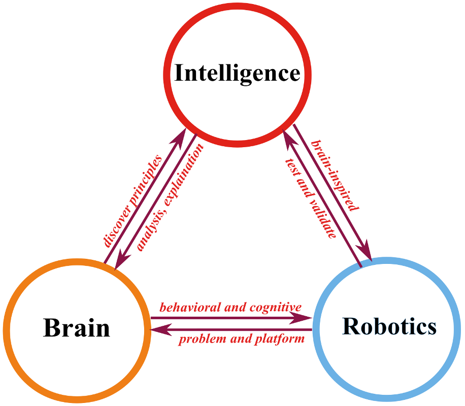

Research Overview
We link brain, intelligence, and robotics—deriving principles from neural and behavioral evidence, modeling them into theories and algorithms, and validating them in robotic tasks and scenarios. 
Brain: neural & behavioral evidence
We investigate spatial cognition through multi-region neural recordings and behavioral evidence, uncovering how parallel pathways coordinate perception, memory, decision-making, and motor control during navigation.Intelligence: theories & models & algorithms
We aim to develop theories of intelligence by replicating neuronal activity with minimal computational models, modeling the whole mouse brain as a digital twin, explaining representation data through theory to predict experimental outcomes, and ultimately creating brain-inspired AI algorithms.Robotics: tasks & platforms & scenarios
We aim to build robots with human-level intelligence for dynamic environments—pioneering brain-inspired navigation, developing bioinspired robots, and enabling applications in rescue, inspection, and gardening.